Cam Balkon
Cam balkon montajı ve tamiratı hizmeti. Evinizin balkonunu kullanılabilir bir alan haline getiriyoruz.
WhatsApp'tan SorOnikişubat ve Dulkadiroğlu'da cam balkon, PVC pencere-kapı, sineklik, duşakabin montajı ve tamirat hizmetleri. WhatsApp veya telefonla hemen iletişime geçin.
Kahramanmaraş'ta sunduğumuz profesyonel hizmetler
Cam balkon montajı ve tamiratı hizmeti. Evinizin balkonunu kullanılabilir bir alan haline getiriyoruz.
WhatsApp'tan SorPVC pencere ve kapı montajı ile tamiratı. Yüksek izolasyon ve uzun ömürlü kullanım.
WhatsApp'tan SorTeras ve balkon alüminyum korkuluk montajı. Dayanıklı ve estetik çözümler.
WhatsApp'tan SorPencere ve kapı sineklik montajı ile tamiratı. Böcek koruması için pratik çözümler.
WhatsApp'tan SorDuşakabin montajı ve tamiratı. Banyonuz için modern ve su geçirmez çözümler.
WhatsApp'tan SorPlicell perde montajı. Pratik ve hijyenik perde çözümleri.
WhatsApp'tan SorCam balkon, PVC pencere, sineklik ve diğer sistemlerin bakım, ayar ve tamirat hizmetleri.
WhatsApp'tan SorGerçek müşteri işlerimizden örnekler
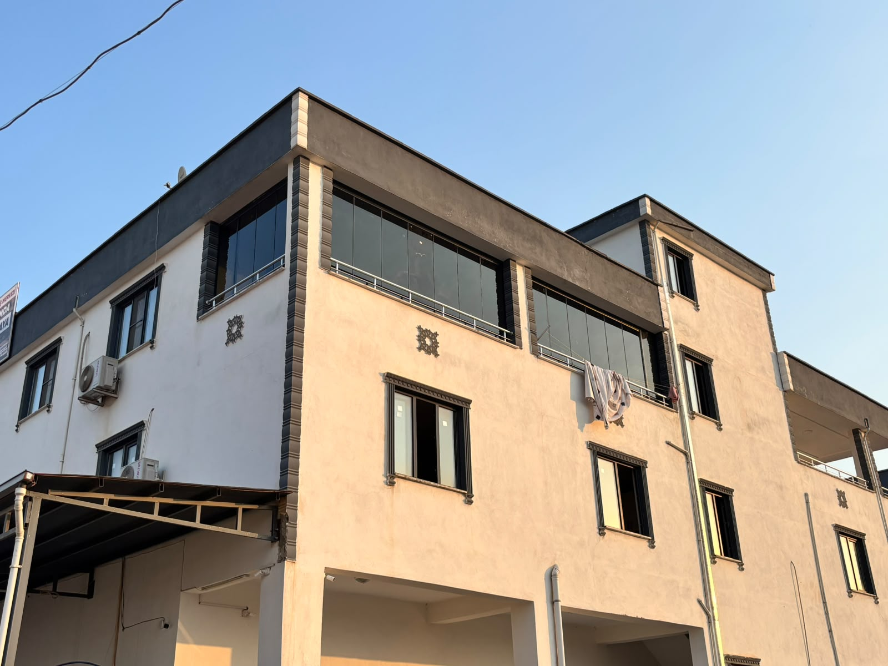
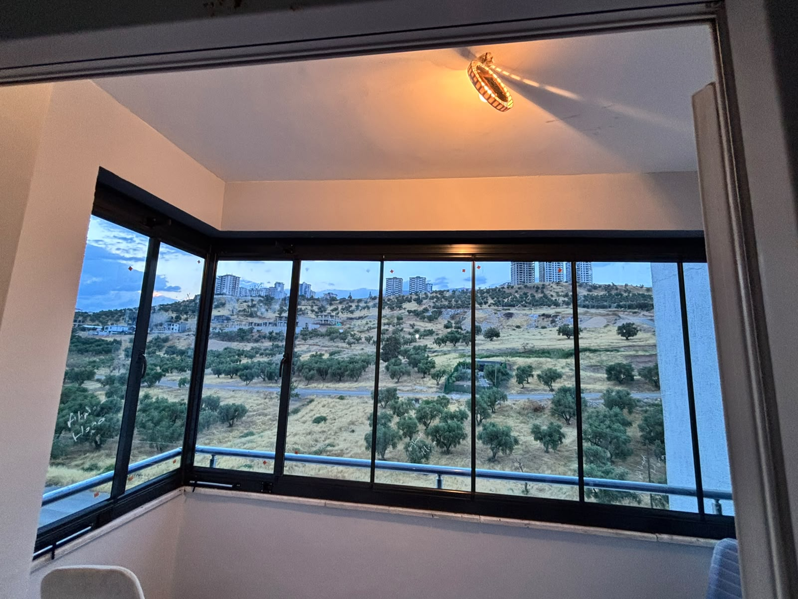
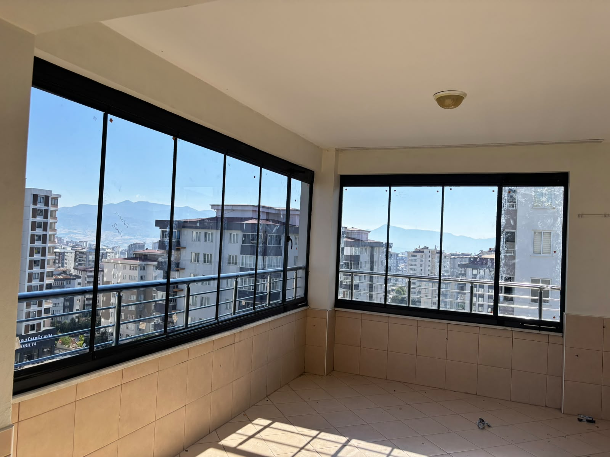
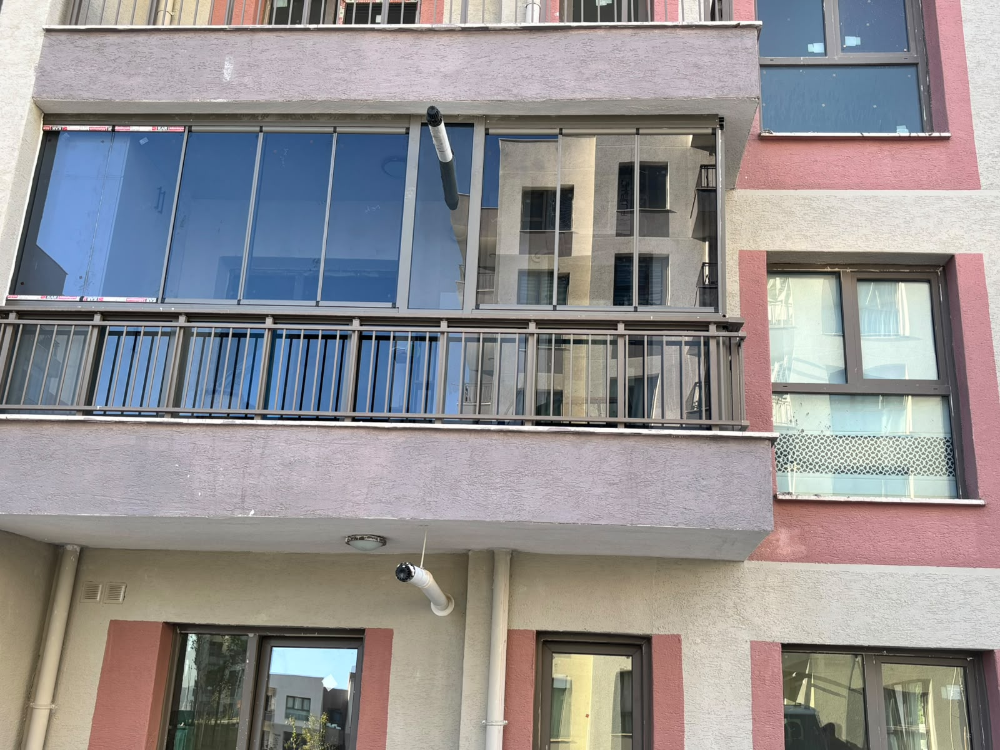
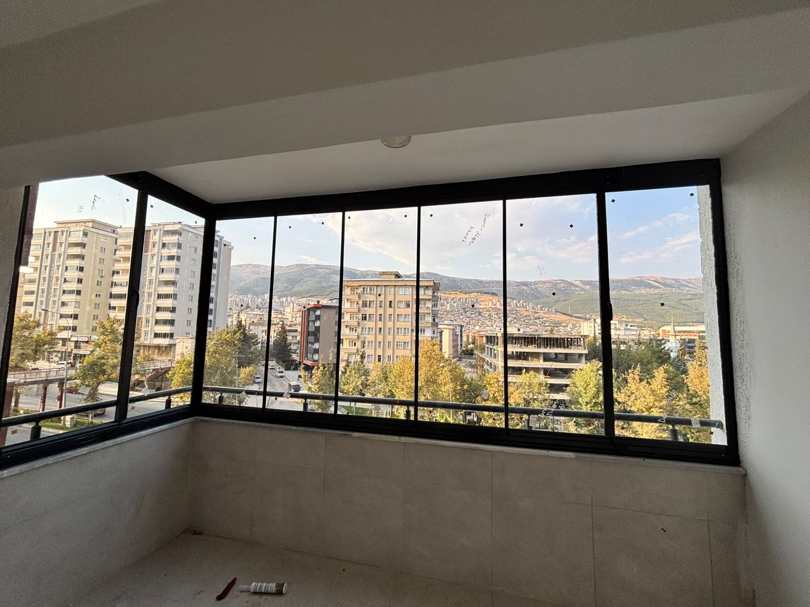
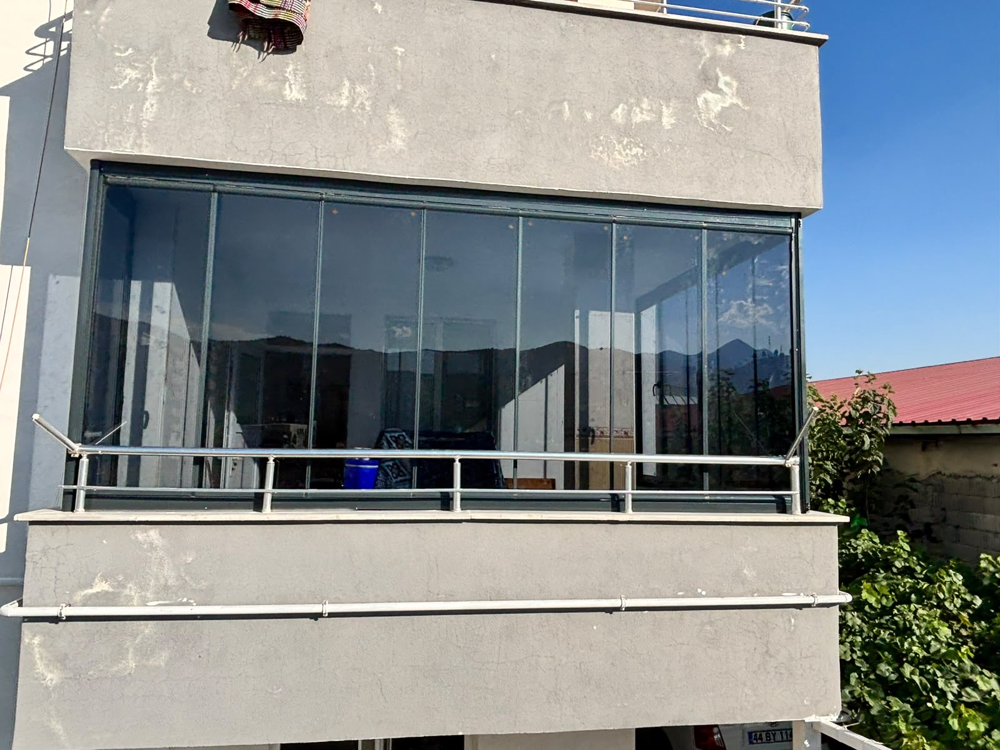
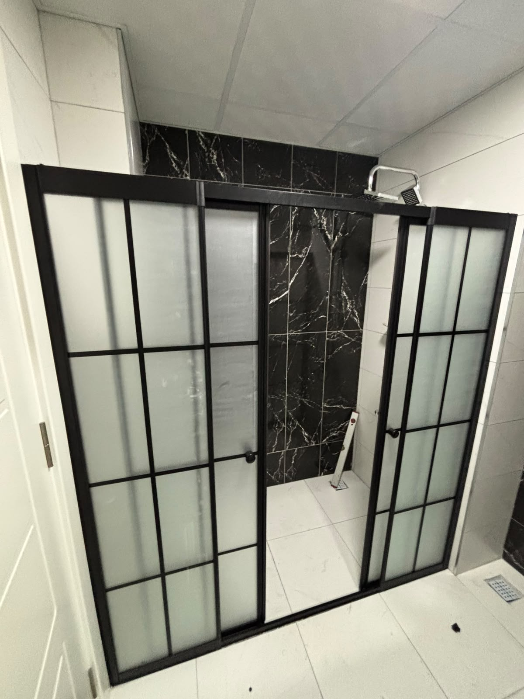
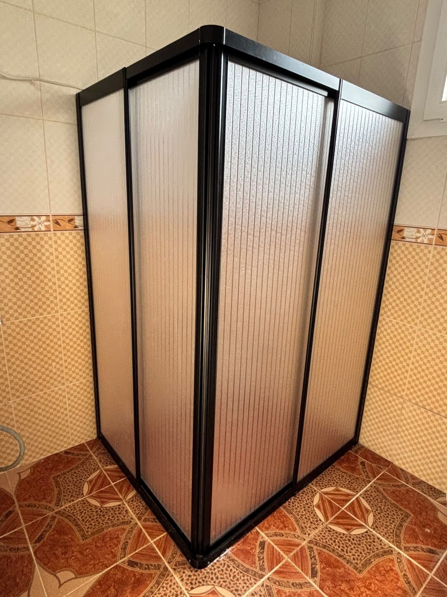
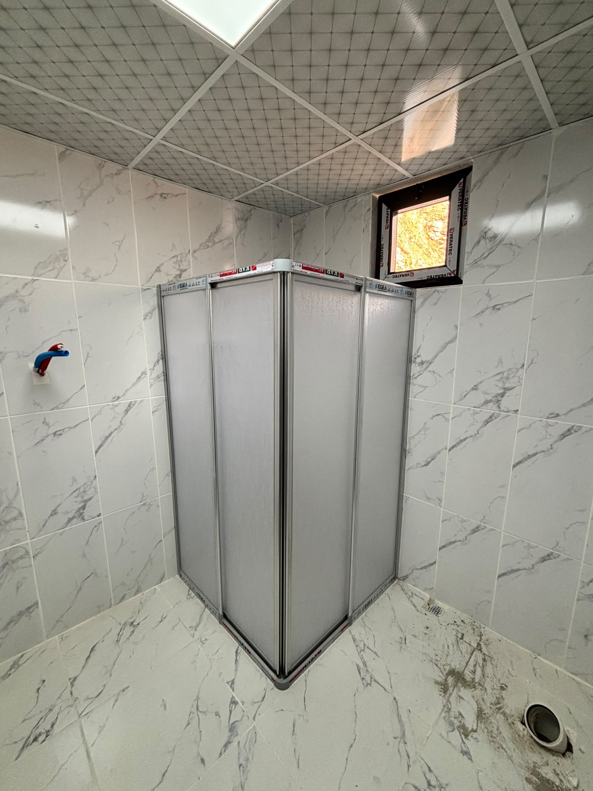
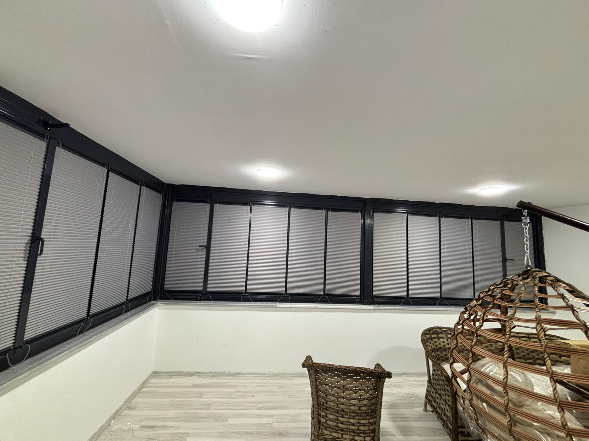
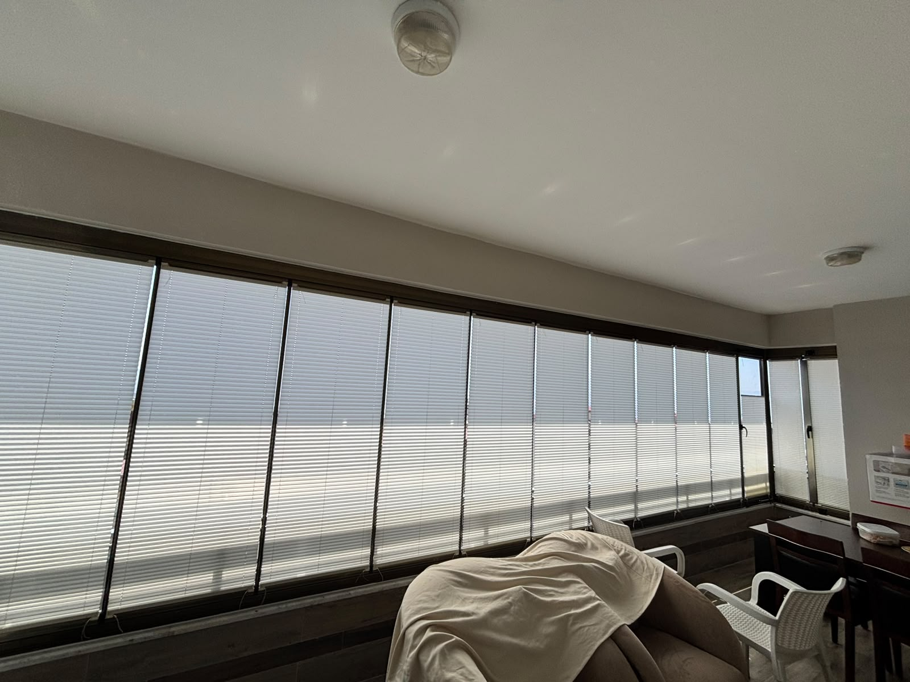
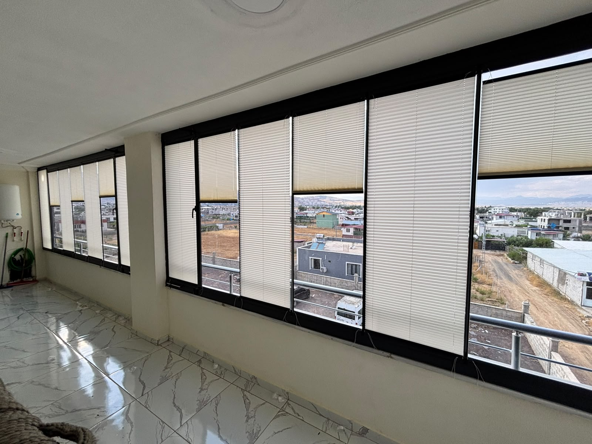
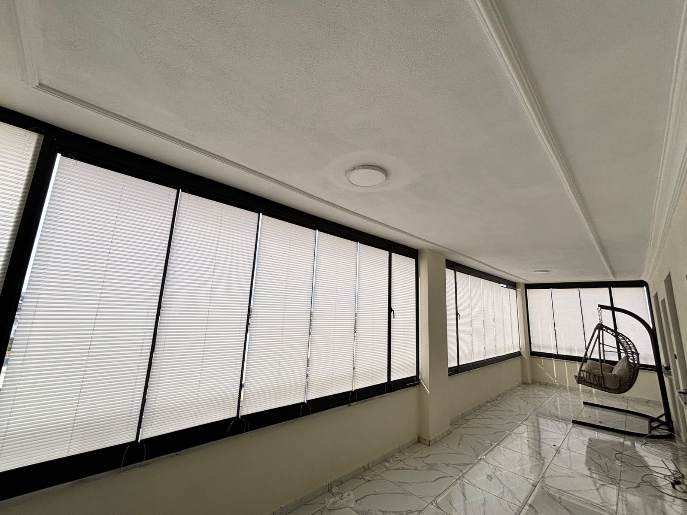
Cam balkon, PVC pencere-kapı, sineklik, duşakabin ve daha birçok hizmet tek çatı altında.
Hem yeni montaj hem de mevcut sistemlerin tamiratı için hizmet veriyoruz.
Onikişubat ve Dulkadiroğlu başta olmak üzere Kahramanmaraş ve çevresinde hizmetimiz.
Telefon veya WhatsApp üzerinden doğrudan iletişim ile hızlı hizmet.
Kaliteli hizmet ve uygun fiyat dengesi ile müşteri memnuniyeti.
Öncelikli olarak Onikişubat ve Dulkadiroğlu ilçelerinde hizmet veriyoruz. Çevre ilçelerde de talep üzerine hizmet sağlanabilmektedir.
Hizmet bölgesi ile ilgili detaylı bilgi için WhatsApp veya telefonla iletişime geçebilirsiniz.
Telefonumuzu 0543 526 47 92 numarasından arayabilir veya WhatsApp üzerinden mesaj gönderebilirsiniz.
WhatsApp üzerinden fotoğraf göndererek veya telefonla detaylı bilgi vererek fiyat teklifi alabilirsiniz. Konum ve talep edilen hizmete göre fiyat değişebilir.
Evet, WhatsApp üzerinden fotoğraf göndererek sorununuzu daha iyi anlatabilir ve hızlı fiyat teklifi alabilirsiniz.
Öncelikli olarak Kahramanmaraş Onikişubat ve Dulkadiroğlu ilçelerinde hizmet veriyoruz. Çevre ilçelerde de talep üzerine hizmet sağlanabilmektedir.
Evet, hem yeni montaj hem de mevcut sistemlerin tamiratı için hizmet veriyoruz. Detaylı bilgi için iletişime geçebilirsiniz.
📍 Hizmet Bölgesi: Kahramanmaraş (Onikişubat, Dulkadiroğlu ve çevre ilçeler)